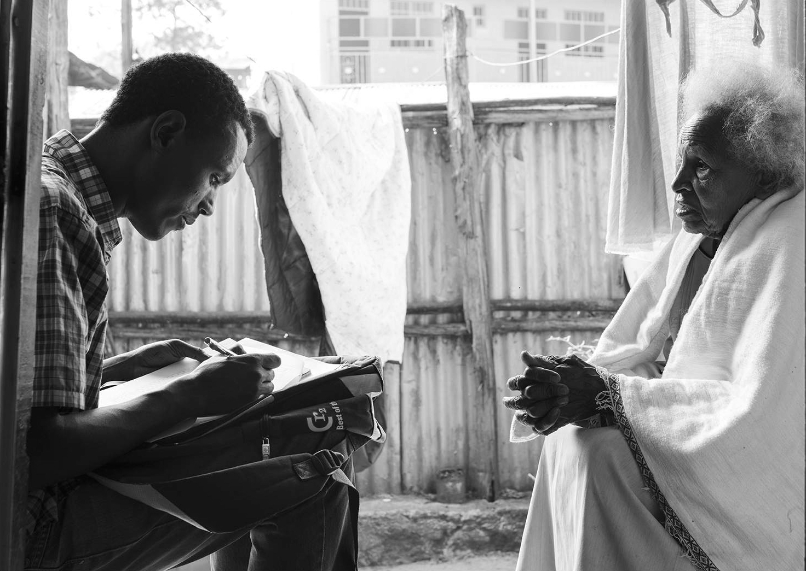

Rapid Assessment Method for Older People (RAM-OP)
A Manual
![]()
Introduction

Older people (generally defined as people aged sixty years and older) are a vulnerable group for malnutrition in humanitarian and developmental contexts. Due to their age they have specific nutritional needs, such as easily digestible and palatable food adapted to those with chewing problems, which is dense in nutrients. In famine and displacement situations where populations are dependent on food distributions, older people often find the general ration inappropriate to their tastes and needs, have difficulties accessing the distributions, or have difficulties transporting rations home. As a result, older people can become malnourished and in need of specifically targeted food interventions. In times of drought or food scarcity, older people tend to reduce their food intake in order to share or give up their ration to younger members of their families. They are then at risk of malnutrition.
Despite these potential vulnerabilities in humanitarian situations, older people are rarely identified as a group in need of specific nutritional or food assistance. Surveys and assessments almost always focus on children, and sometimes on pregnant and lactating women. Humanitarian workers argue that assessing the nutritional status and needs of older people is both costly and complicated. As a consequence, the nutritional status and needs of older people in crisis go unidentified and unaddressed.
HelpAge International, VALID International, and Brixton Health, with financial assistance from the Humanitarian Innovation Fund (HIF), have developed a Rapid Assessment Method for Older People (RAM-OP) that provides accurate and reliable estimates of the needs of older people. The method uses simple procedures, in a short time frame (i.e. about two weeks including training, data collection, data entry, and data analysis), and at considerably lower cost than other methods. The RAM-OP method is based on the following principles:
Use of a familiar “household survey” design employing a two-stage cluster sample design optimised to allow the use of a small primary sample (\(m ≥ 16\) clusters) and a small overall (\(n ≥ 192\)) sample.
Assessment of multiple dimensions of need in older people (including prevalence of global, moderate and severe acute malnutrition) using, whenever possible, standard and well-tested indicators and question sets.
Data analysis performed using modern computer-intensive methods to allow estimates of indicator levels to be made with useful precision using a small sample size.
The following tools are currently available under the General Public Licence / Free Documentation License, meaning that you are free to copy and adapt these tools:
an English language manual / guidebook
a questionnaire (available in English and French)
data entry and data checking software (available in English and French)
data analysis software.
We believe that the availability of a rapid, low-cost, and user-friendly method will encourage governments, UN agencies, as well as international and local non-governmental organisations to actively assess the situation of older people in humanitarian contexts, and implement, monitor, and evaluate relevant and timely responses to address their needs.